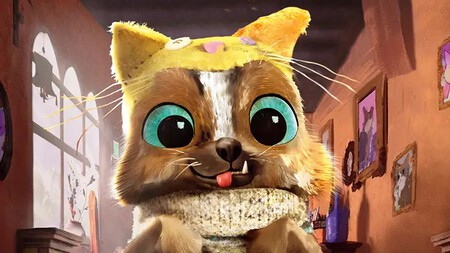

Volver a la Pagina principal
Perro es uno de los nuevos amigos de el Gato con Botas, Es un perro abandonado con un gran sentido del humor y que su sueño es ser perro de terapia para poder ayudar a los demas.
